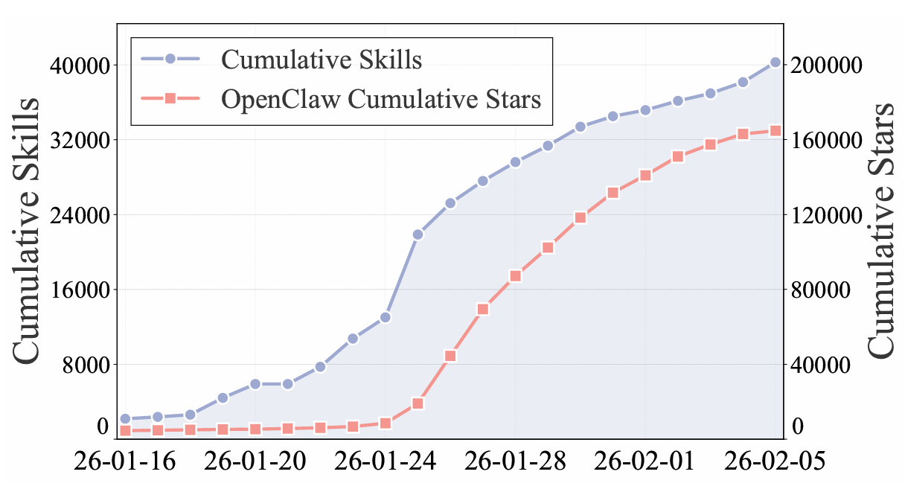
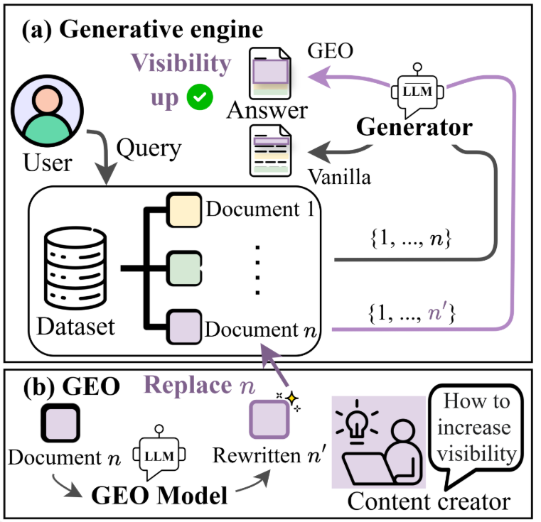
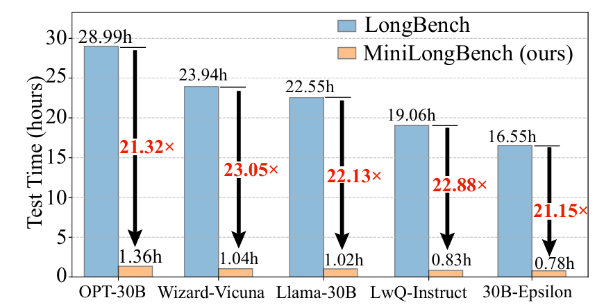
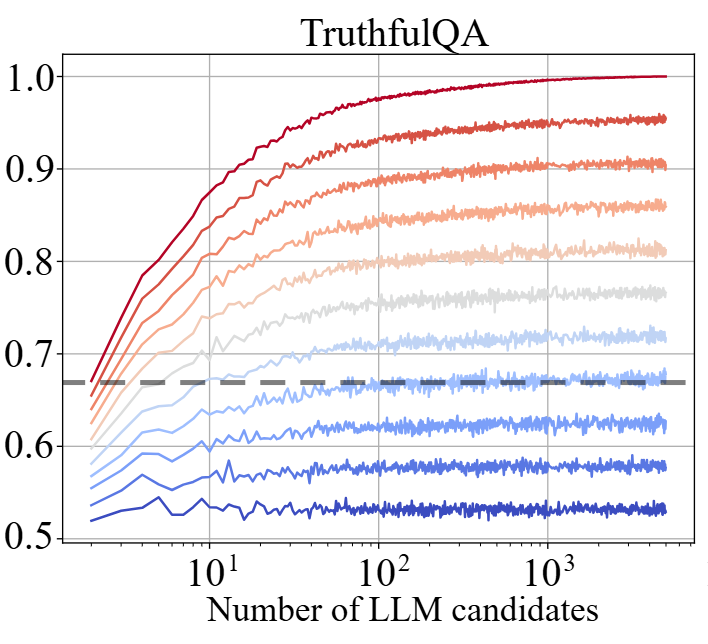
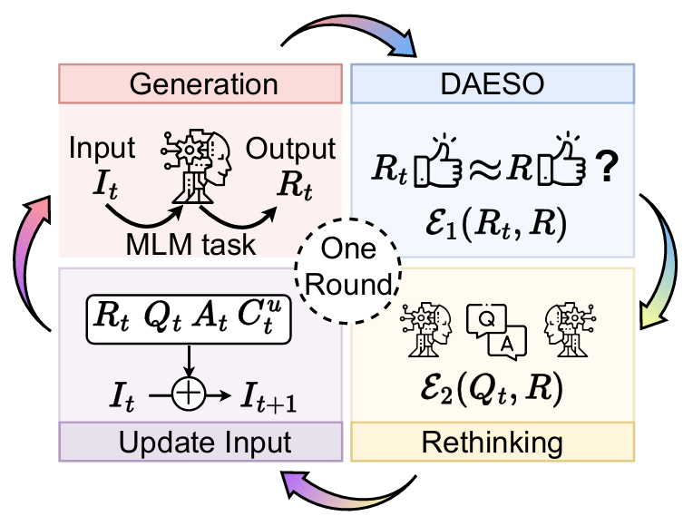
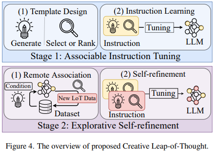

Shanshan Zhong
钟珊珊
Ph.D. Student
Carnegie Mellon University
Language Technologies Institute
Carnegie Mellon University
Language Technologies Institute
Here are some of my recent favorite publications (* denotes co-first author).





